Âge de l’Acier
Études de l’Acier à relire — encre et aquarelle. Cliquer sur un dessin pour voir son original.
Haut-fourneau
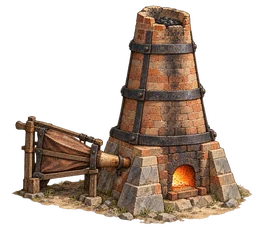
48 px 32 px
haut_fourneau · 22,260 octetsLingot d’acier
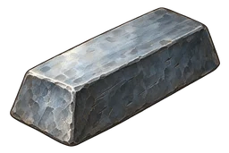
48 px 32 px
lingot_acier · 11,666 octetsBac de trempe
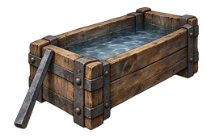
48 px 32 px
bac_trempe · 15,506 octetsAcier trempé
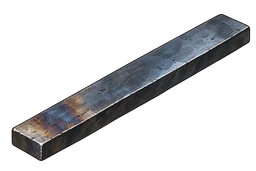
48 px 32 px
acier_trempe · 7,986 octetsLame trempée
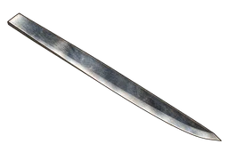
48 px 32 px
lame · 5,818 octetsVerre trempé
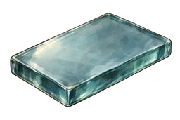
48 px 32 px
verre_trempe · 10,270 octetsTour d’usinage
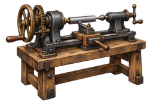
48 px 32 px
tour · 21,132 octetsEngrenage d’acier
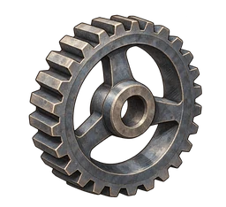
48 px 32 px
engrenage_acier · 19,462 octetsVis
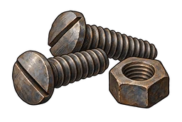
48 px 32 px
vis · 14,250 octetsRoulement à billes
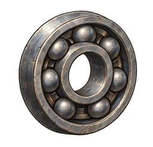
48 px 32 px
roulement · 19,080 octetsOutils d’acier
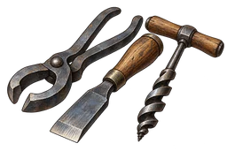
48 px 32 px
outils_acier · 16,724 octetsProduction individuelle par ImageGen intégré. Prompts exacts : prompts.json. Lot de revue séparé du jeu.